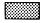

Forest lands not available for agricultural development other than grazing. Provincial public lands are managed for multiple uses including forest production, water, fish and wildlife, recreation, grazing and industrial development.